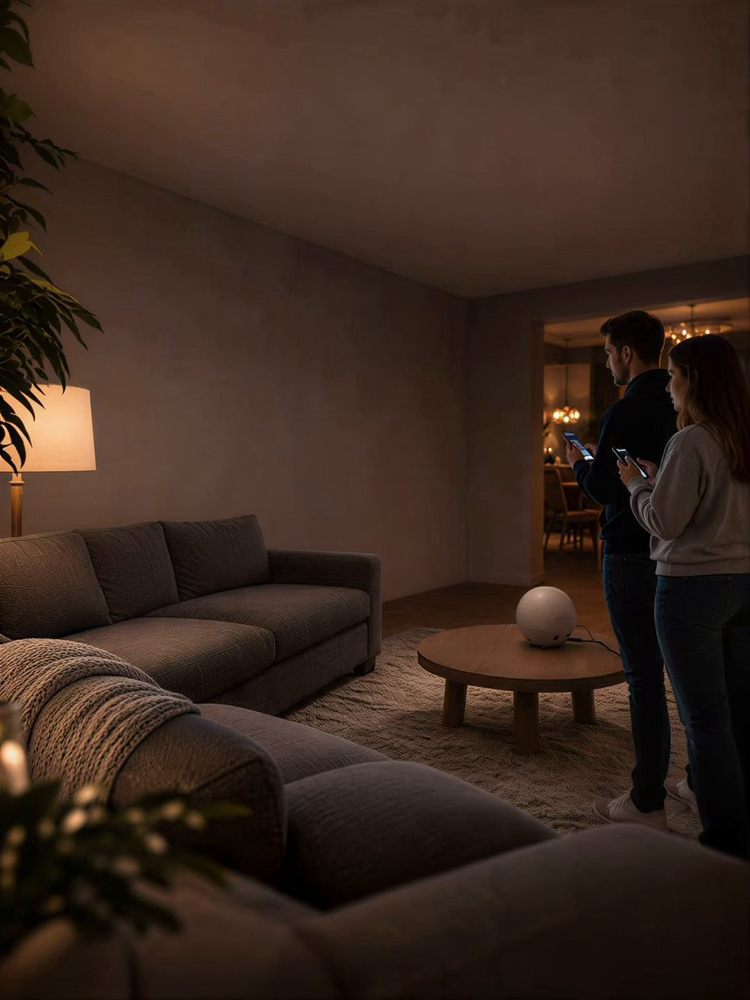
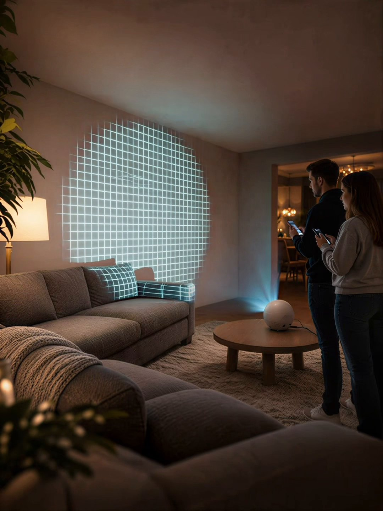
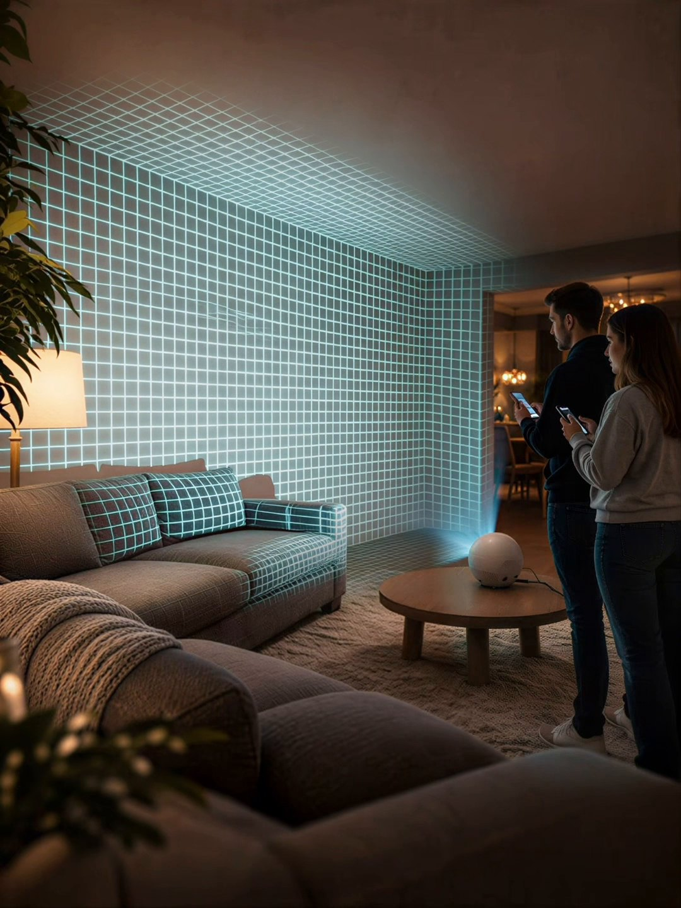
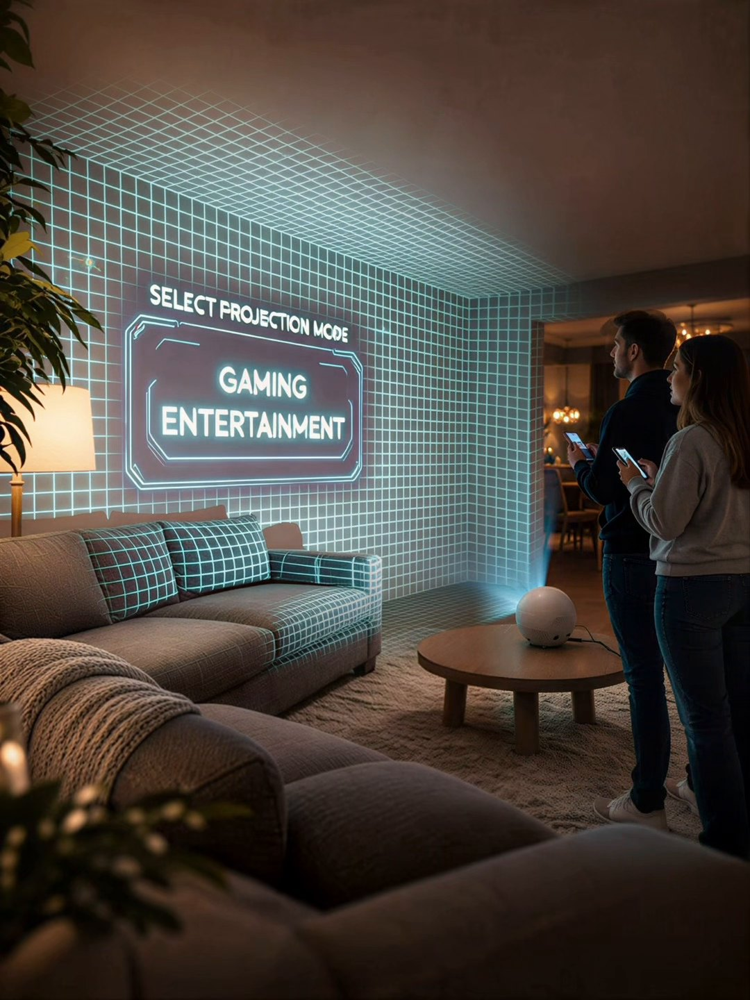
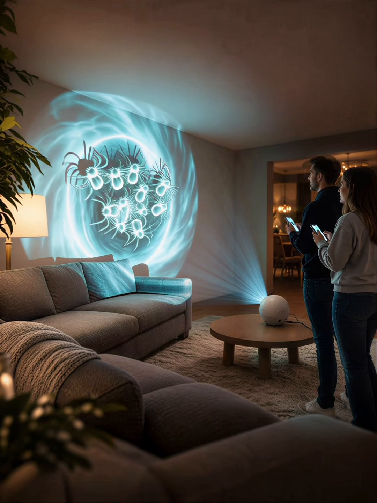
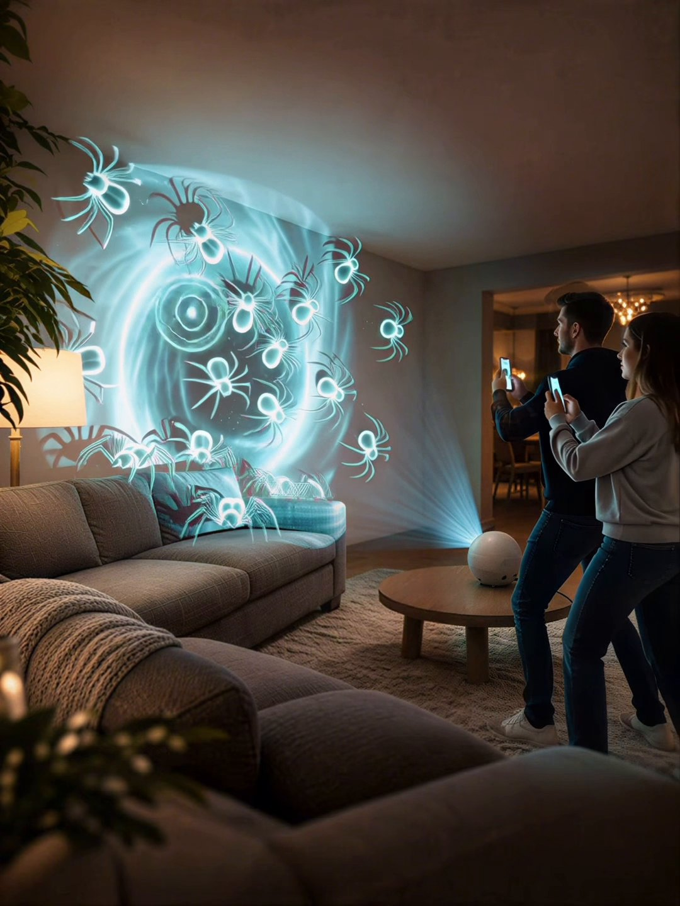

PROJECT ORION






01 / 08Spatial technology
01 · Experiential technology
PROJECT ORION
The room is the screen.
Orion projects digital imagery straight onto the objects and surfaces around you. No headset, no phone, nothing to download. A table, a wall or a shop window becomes part of the story, so retail floors, live events and brand activations become places people step into, not screens they look at.
Patented · U.S. Patent No. 11,127,212Method of projecting virtual reality imagery for augmenting real world objects and surfacesRead the patent